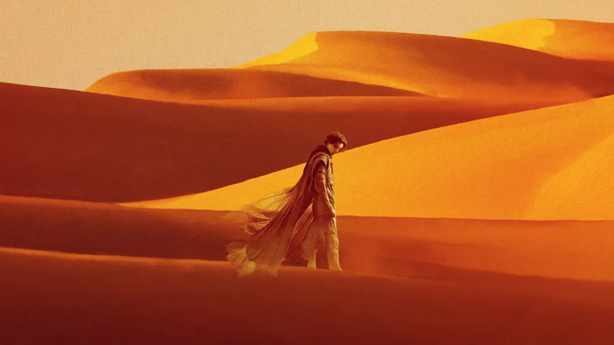
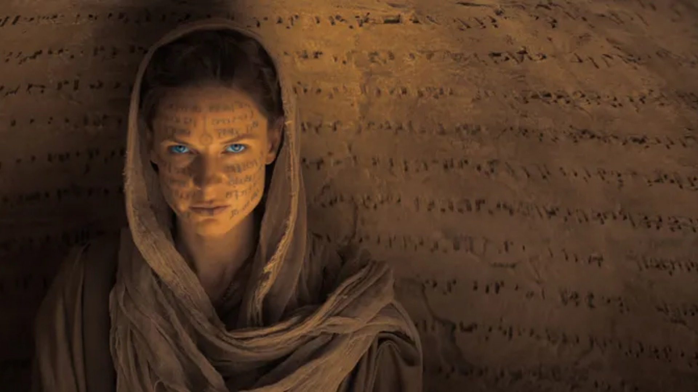
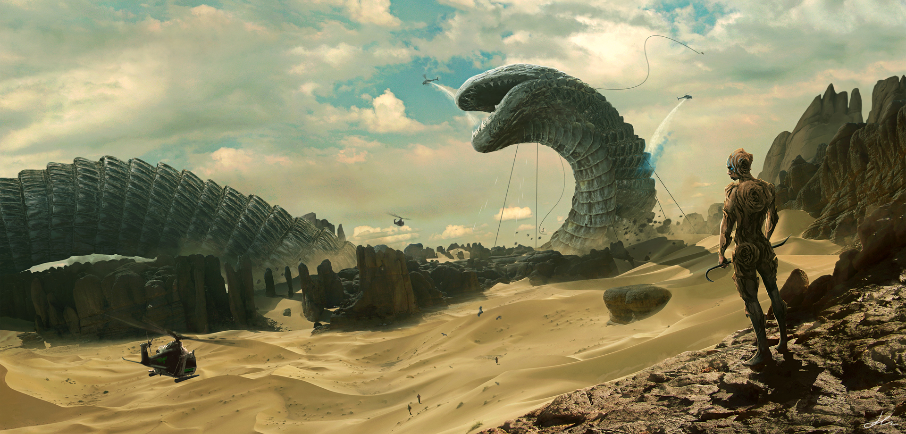

Muad'Dib, born Paul Atreides, embodies the dual mantle of the Lisan al-Gaib, the Voice from the Outer World. United with the desert Fremen, his prescient visions and mastery of spice grant him the might to challenge imperial forces. The legend of Muad'Dib and his prophetic wisdom reshape the universe's fate.

Lady Jessica, Bene Gesserit adept and mother of Paul Atreides, weaves herself into the intricate tapestry of power and prophecy on the desert planet Arrakis. Her forbidden love with Duke Leto Atreides fuels the intrigue amidst the treacherous politics of the Imperium. With a potent melange of mystery and strength, she shapes the destiny of the desert world.

Shai Hulud, the mighty sandworms of Arrakis, epitomize the unforgiving nature of the desert. Silent giants, they dwell beneath the dunes, guarding the precious spice melange. Revered as sacred creatures, their colossal presence embodies both awe and dread, shaping the fate of those who dare to traverse their arid realm.